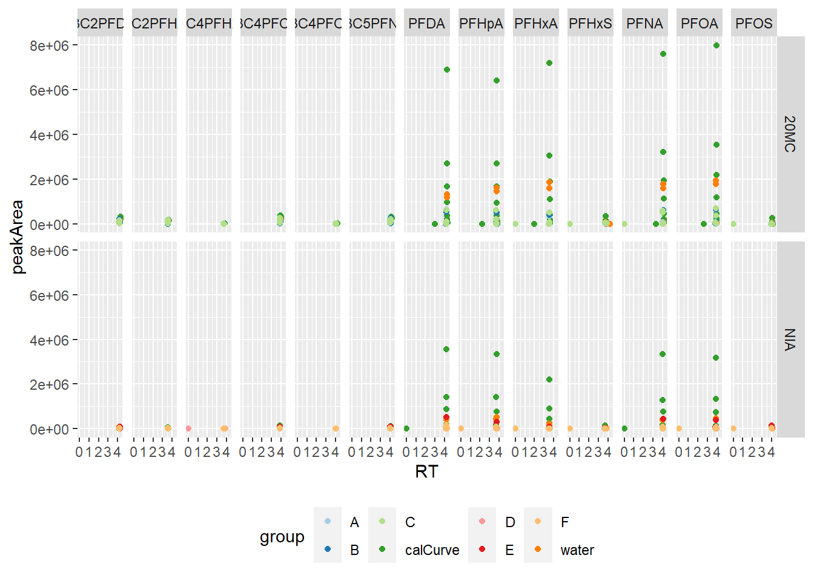
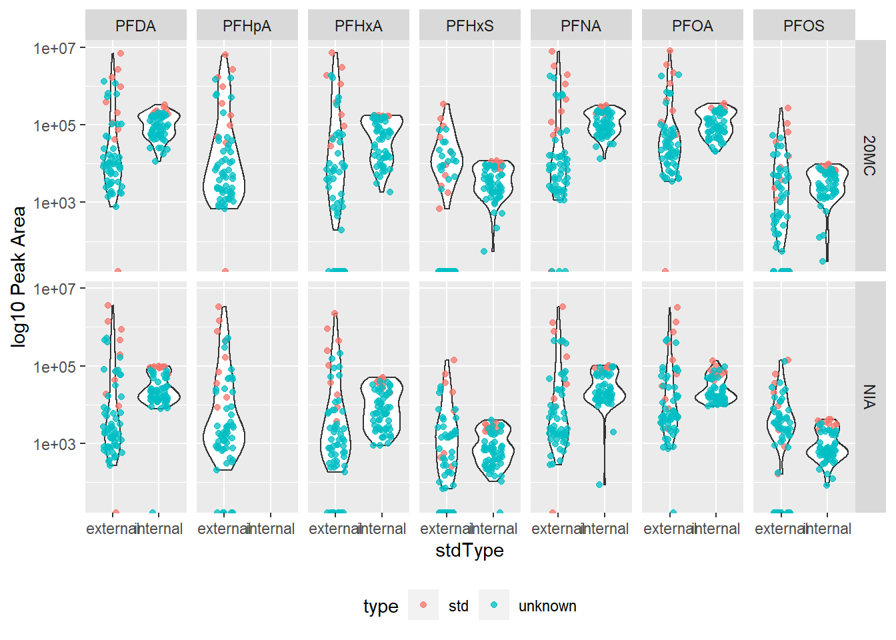
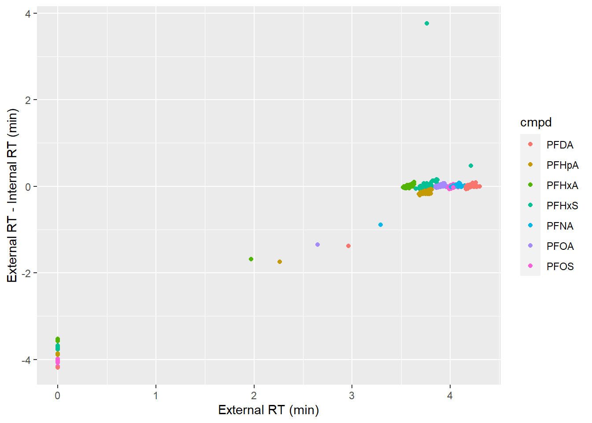
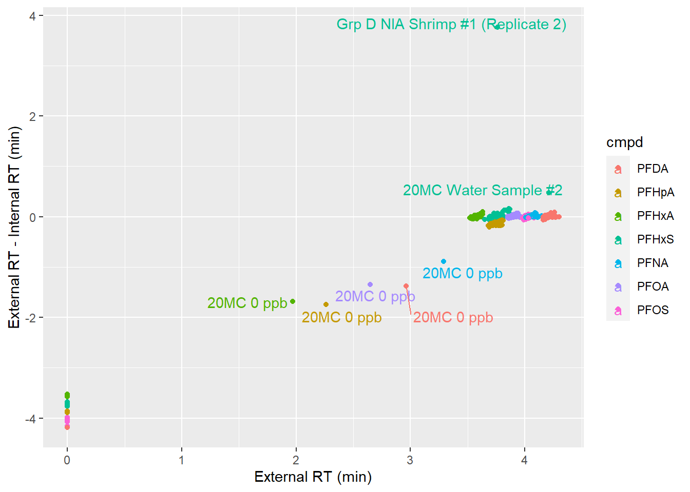
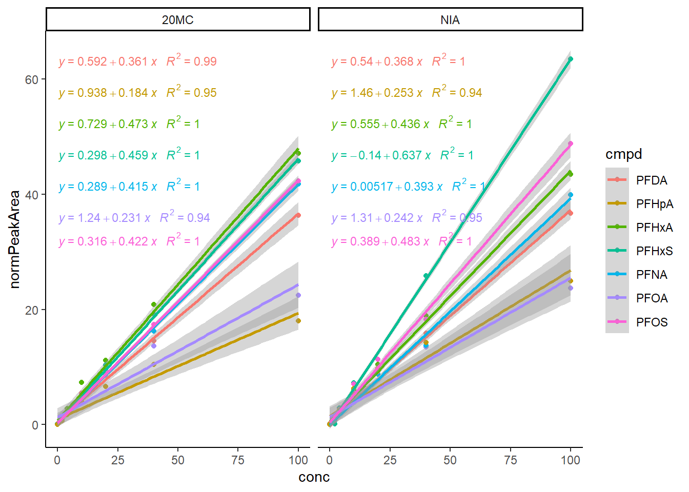
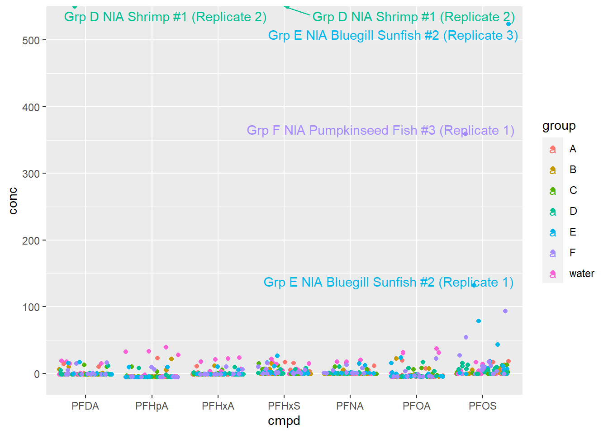
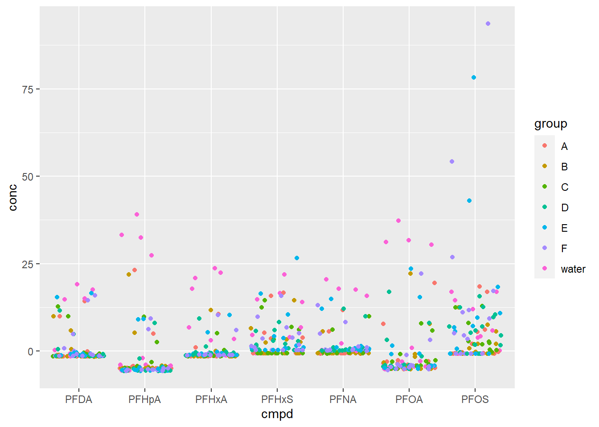

Chapter 5 Calibration Curves with QQQ Data
Note I didn’t actually take the CHM410 course, so Jess will need to review this part. As well, i expect this entire chapter will get chopped up in later drafts of the book. As well, will review modelling stuff to find an easier pay. Probably with purrr and what not. -DH
Sample prep is only half the fun when it comes to environmental chemistry. Eventually you’ll want to quantify what’s in your samples and to do that you’ll need to construct calibration curves. This write up will use previously acquired triple-quadrupole LC-MS (hence QQQ) results from the 2019 CHM410 Field trip. This fieldtrip data is comprised of three datasets: lab4_biota.csv with the sampling information for biological samples, liab4_sediment.csv for sediment sampling information, and lab4_qqq.csv with the integrated peak areas of every analyzed sample and calibration standard. For this section you’ll only need lab4_qqq.csv as we’ll only be calculating the concentration of the samples we injected in the instrument, and not back calculating the concentration in our original samples.
Note Most of what we’ll need is contained in the tidyverse family of packages, but you will also need the broom and ggrepel packages to make your lives easier.
5.1 Importing and tidying data
First off let’s import the peak area information for all of our analytes. Note I cleaned up the data in Excel resulting in the lab4_qqq.csv file used herein. This is mostly because of issues with merged cells and multiple sheets in the original dataset. I also took the opportunity to generated unique sampleID values for each sample by combining the sample name and the group letter.
library(tidyverse) # for dplyr, readr, stringr, and ggplot
QQQ <- read_csv("data/CHM410/lab4_qqq.csv")
head(QQQ)## # A tibble: 6 x 29
## group type sampleID PFHxA_peakArea PFHxA_RT `13C2PFHxA_peak~ `13C2PFHxA_RT`
## <chr> <chr> <chr> <dbl> <dbl> <dbl> <dbl>
## 1 calC~ std 20MC 0 ~ 0 1.97 160000 3.65
## 2 calC~ std 20MC 0.~ 28400 3.62 174000 3.62
## 3 calC~ std 20MC 0.~ 45100 3.62 169000 3.61
## 4 calC~ std 20MC 1 ~ 90900 3.61 168000 3.61
## 5 calC~ std 20MC 2 ~ 184000 3.6 174000 3.6
## 6 calC~ std 20MC 4 ~ 384000 3.61 141000 3.6
## # ... with 22 more variables: PFHpA_peakArea <dbl>, PFHpA_RT <dbl>,
## # PFOA_peakArea <dbl>, PFOA_RT <dbl>, `13C4PFOA_peakArea` <dbl>,
## # `13C4PFOA_RT` <dbl>, PFNA_peakArea <dbl>, PFNA_RT <dbl>,
## # `13C5PFNA_peakArea` <dbl>, `13C5PFNA_RT` <dbl>, PFDA_peakArea <dbl>,
## # PFDA_RT <dbl>, `13C2PFDA_peakArea` <dbl>, `13C2PFDA_RT` <dbl>,
## # PFHxS_peakArea <dbl>, PFHxS_RT <dbl>, `13C4PFHxS_peakArea` <dbl>,
## # `13C4PFHxS_RT` <dbl>, PFOS_peakArea <dbl>, PFOS_RT <dbl>,
## # `13C4PFOS_peakArea` <dbl>, `13C4PFOS_RT` <dbl>Note how our data is in a wide format, with columns for the peak area and retention times for each targeted ion. This served the TA well when they wrote down the data from the LC-MS analysis, but let’s tidy it up so it’s easier to work with in R.
### Find cleaner way of doing this...
QQQ <- QQQ %>%
pivot_longer(cols = -c("group", "type", "sampleID"),
names_to = c("cmpd", "measurement"),
names_sep = "_",
values_to = "value") %>%
pivot_wider(names_from = measurement,
values_from = value)
head(QQQ)## # A tibble: 6 x 6
## group type sampleID cmpd peakArea RT
## <chr> <chr> <chr> <chr> <dbl> <dbl>
## 1 calCurve std 20MC 0 ppb PFHxA 0 1.97
## 2 calCurve std 20MC 0 ppb 13C2PFHxA 160000 3.65
## 3 calCurve std 20MC 0 ppb PFHpA 0 2.26
## 4 calCurve std 20MC 0 ppb PFOA 0 2.65
## 5 calCurve std 20MC 0 ppb 13C4PFOA 244000 4
## 6 calCurve std 20MC 0 ppb PFNA 0 3.29Much better, each column is a variable, and every row an observation. However, since the Lake Niamco samples were analysed at a different time then the 20 Mile Creek samples, let’s quickly annotate our data to differentiate the two. Since we used (overly) descriptive sample names (stored in the sampleID column), we can create a new column to specify the location by searching for matching string values.
QQQ <- QQQ %>%
mutate(location = case_when(
str_detect(sampleID, regex("20MC", ignore_case=TRUE)) ~ "20MC",
str_detect(sampleID, regex("NIA", ignore_case=TRUE)) ~ "NIA",
TRUE ~ "NA"))The code above will search through every row in the sampleID column. If it finds the string of characters 20MC, which we used to denote samples from 20 Mile Creek, it will record this in a new column called location. Same with NIA. If neither 20MC or NIA are detected, it returns NA. Note, if we had more complex sampleID names, we could expand our case_when arguments accordingly.
Let’s make a quick plot to verify everything is looking alright:
library(RColorBrewer) # because i'm colour blind...
ggplot(QQQ, aes(x = RT, y = peakArea, colour = group)) +
geom_point() +
facet_grid(cols = vars(cmpd),
rows = vars(location)) +
theme(legend.position = "bottom") +
scale_color_brewer(palette = "Paired")
Alright, busy plot, but let’s see what we got. First off, this is a small multiple, basically a grid of small, individual, plots that share a common axis. So each small plot is our retention time (RT) on the x-axis vs. integrated peak area (peakArea) on the y-axis. Now our small multiple is organized in a grid, with the columns of the grid corresponding to the ions we analyzed, and the rows of the grid being the location grouping. So, the top-right plot shows the peak area vs. retention time of PFOS from the 20 Mile Creek samples. Lastly, the colour of a point corresponds to the group to which that value belongs. So we see multiple calCurve values at the same RT for a given compound, but with vastly different peak areas. This makes sense, as these are our standards from which we’ll construct our calibration curve later on.
Now that we understand what we’re looking at, let’s inspect our data. Here are some things I noted:
- Some compounds have a
RTandpeakAreaof 0. Now their actual concentration isn’t necessarilly 0 ppb, rather the vendor software used to calculate peak areas will return0if a given ion wasn’t detected. However, R will interpret this number literally, so we’ll need to address this later on. - Most compounds elute at approximately 4 minutes. The grouping of retention times makes sense because of the structural similarity of our targeted compounds, and the short chromtagraphy gradient.
- However some compounds appear to elute earlier. Often these outliers have a low
peakArea, so they may be the result of the vendor’s algorithm integrating noise, and mislabelling it as a legitimate peak. We’ll need to review this later on. - The internal standards all appear to have similar peak areas values. This makes sense, as we’ve spiked in the same amount of internal standard for each sample.
- No signal is greater than a
calCurvesignal, this is good as it means all of our unknowns should fall within our calibration curve; baring matrix effects…
5.2 Normalizing QQQ Data
Now that we’re all organized in terms of importing our LC-MS results, let’s being the work of actually quantifying the samples we injected into the LC-MS before back calculating and quantifying our actual field samples.
First thing, we’ll need to normalize our peak areas to account for matrix effects. To achieve this, we’ll need to pair each analyte of interest with it’s assigned internal standard. Recall however that we did not have an exact isotopic standard for each compound. The pairing, from the lab manual, is below:
| Analyte | Full name | Carboxylic acid? | Sulfonic acid? | Number of Carbons | Number of perfluorinated carbons | Internal Standard to use |
|---|---|---|---|---|---|---|
| PFHxA | Perfluorohexanoic acid | x | 6 | 5 | 13C4 PFHxA | |
| PFHpA | Perfluoroheptanoic acid | x | 7 | 6 | 13C4 PFOA | |
| PFHxS | Perfluorohexane sulfonic acid | x | 6 | 6 | 13C4 PFHxS | |
| PFOA | Perfluorooctanoic acid | x | 8 | 7 | 13C4 PFOA | |
| PFNA | Perfluorononanoic acid | x | 9 | 8 | 13C5 PFNA | |
| PFOS | Perfluorooctane sulfonic acid | x | 8 | 8 | 13C4 PFOS | |
| PFDA | Perfluorodecanoic acid | x | 10 | 9 | 13C2 PFDA |
So according to the table above, both PFHpA and PFOA use 13C4PFOA as an internal standard. Given
5.2.1 Assessing Internal Stds
For fun, let’s gauge how much our internal standards varied between samples. After all, they’re all supposed to be the same… We’ll create a new column to annotate which compounds are from our internal standard (i.e. those with \(^{13}C\)). For that, we’ll recycle a bit of code from above to search for the “13C” string. Then we can compare the peak areas of the internal standards and our analytes of interest.
As for pairing, there’s a couple of ways we could do this. Let’s just create a new column where we remove the 13C. string, so we get the same compounds. Some things to note about the string search:
- The regex
13C., will look up any string with13Cand one additional wildcard character (noted by the.). This way we can account for the different numbers of 13C in the name, such as13C4and13C2. PFHpAwill not have an isotopic pair. We’ll need to resolve this later by subtracting the13C4PFOAvalues from it.
# annotating internal and external standards
QQQ <- QQQ %>%
mutate(stdType = case_when(
str_detect(cmpd, regex("13C", ignore_case=TRUE)) ~ "internal",
TRUE ~ "external"))
# pairing analytes w/ internal standard
QQQ <- QQQ %>%
mutate(pair = str_remove(cmpd, regex("13C.")))
ggplot(data = QQQ, aes(x = stdType, y = peakArea)) +
geom_violin() +
geom_jitter(position=position_jitter(0.1), alpha = 0.25) +
scale_y_continuous(trans="log10") +
facet_grid(cols = vars(pair),
rows = vars(location)) +
theme(legend.position = "bottom") +
ylab("log10 Peak Area")
Boy howdy let’s break this down. This is small multiple of violin plots that shows some neat trends. For those not in the know, a violin plot is similar to a box plot, but the width of the ‘bar’ is a function of the density of the data around that point. In other words, the more points at a given value, the wider the plot; we’ve also plotted the individual points themselves to help convey this. Violin plots help us better visualize groupings of data, and can shed some light if a grouping of data might actually be many smaller groupings.
Anyways, let’s see what else this says about our data. First, we can see that there’s much less variation between internal standards (the “internal” column“) compared to the non-isotopically labelled analytes (the”external" column). Makes sense, all the internal standards are supposed to be the same concentration. However, even then there is still at least an order of magnitude variation in peak area for a given internal standard. Some of this is due to matrix effects, and is why we added the internal standards in the first place. However, looking at the internal standard peak areas, it appears that they cluster into two groups, albeit with some overlap. We might have missed this with a boxplot, but the violin plot helps us see it. This clustering around two points might be the result of people using two different pipettes to spike in their internal standard. The variation between pipettes could account for the clustering of the internal standard peak areas. Speaking of two groups, again, we can see a large number of the “external” were not detected, as denoted by their peak area value of 0. These are probably from the samples originating from the ‘clean’ reference site. Lastly, between internal standards, we can clearly see that sulfonic acids have a weaker instrumental response then carboxylic acid. This is most likely due to difference in ionizability between the aforementioned functional groups.
5.2.2 Normalizing peak areas
Moving onward, the entire point of spiking the same internal standard is to use those values to normalize our external measurements. For this we’ll divide the external peak area by the internal peak area for a given sample. Note this is how I was told CHM410 did it, holler it it’s wrong.
# Note removal of PFHpA, because it doesn't have an isotope pair
# Also note RTDif column, which is difference in retention time between internal and external standard
QQQNorm <- QQQ %>%
filter(pair != "PFHpA") %>%
group_by(sampleID, pair) %>%
mutate(normPeakArea = peakArea[stdType == 'external'] / peakArea[stdType == 'internal']) %>%
mutate(RTdif = RT[stdType == 'external'] - RT[stdType == 'internal'])
# Normalizing PFHpA seperatly; not removal of 13C4PFOA data at end
QQQPFHpA <- QQQ %>%
filter(cmpd %in% c("PFHpA", "13C4PFOA")) %>%
group_by(sampleID, ) %>%
mutate(normPeakArea = peakArea[cmpd == 'PFHpA'] / peakArea[cmpd == '13C4PFOA']) %>%
mutate(RTdif = RT[cmpd == 'PFHpA'] - RT[cmpd == '13C4PFOA']) %>%
filter(cmpd %in% c("PFHpA"))
# Rejoining data and dropping internal standard values as they're no longer needed.
QQQNorm <- QQQNorm %>%
bind_rows(QQQPFHpA) %>%
filter(stdType == "external")So the above code did double duty. First we normalized the external peak areas by the internal standard peak areas. This has a couple of consequence;
- If a compounds wasn’t detected, it has a peak area of 0. When divided by the internal peak area, the result will be zero.
- If an internal standard wasn’t detected, the external peak area will be divided by 0 resulting in
Inf, a value of infinity, because inR,1/0 = Inf
Let’s see how our internal and external standards match up by comparing internal and external retention times.
ggplot(QQQNorm, aes(x = RT, y = RTdif, colour = cmpd)) +
geom_point() 
Alright, it appears that most of our compounds are clustering around themselves, and there’s little variation among the RTdif axis, meaning there isn’t a large difference between the retention times of the internal and external peaks. This means our peak picking algorithm chose peaks at the correct retention time. Of course, the clustering around RT = 0 is from compounds that weren’t detected, but whose internal standards were; this is fine. However, there appears to be some outliers somewhere between these two clusters. These are probably all from the same sample. Let’s annotate our plot to see if this is true.
ggplot(QQQNorm, aes(x = RT, y = RTdif, colour = cmpd, label = sampleID)) +
geom_point() +
ggrepel::geom_text_repel(aes(label=ifelse(RTdif > 0.25 | (RTdif < -0.25 & RT > 0), as.character(sampleID),'')),hjust=0,vjust=0)
So something strange happened during the acquisition/processing of the 20MC 0 ppb run. Maybe it was the first one of the day, and the instrument was exceptionally noisy, leading to sloppy peak picking by the algorithm. After all, there shouldn’t be any signal as the concentration of the external standard for this sample should be 0 ppb. Likewise, we don’t see this effect with the NIA calibration curve standards. Something to keep in mind as we move forward.
5.3 Calculating Calibration Curves
All this and we’re only here? Yup, it’s important to play around with your data because you never know what you’ll find. Already we’ve talked about issues with our internal spiking, and one of our external standard solutions. Let’s move onwards to calculating our calibration curves.
First we need to get the actual concentrations from our standards to make our cal curves. You can make a data frame and match up your concentrations using inner_join, or you can simply extract the concentration value from the calCurve group sampleIDs, as the numerical value is located between two spaces. Just remember to convert using as.numeric so R knows to treat the extracted strings as numerical values and not as characters (i.e. 0.1 and not "0.1").
QQQstds <- QQQNorm %>%
filter(group %in% c("calCurve")) %>%
mutate(conc = as.numeric(str_extract(sampleID, "(?<=\\s)(.*)(?=\\s)")))Great, now we can simply group our standards by location and compound to compute a linear regression model for each. R has a plethora of built-in modelling functions, but oftentimes the output is less then intuitive. Since we’ll be using the base R lm model to calculate our calibration curves, let’s import the broom package, which is useful for cleaning up R’s modelling outputs (hence broom…).
library(broom)
calCurves <- QQQstds %>%
group_by(location, cmpd) %>%
nest() %>%
mutate(fit = map(data, ~lm(normPeakArea ~ conc, data = .x)),
tidied = map(fit, tidy),
glanced = map(fit, glance)
)Breaking down the above code, we grouped all calibration standards by the compound and location. This way we can get a linear regression for each grouping. Now, withing the mutate function, we’ve created three columns: fit, tidied and glanced. The first contains the raw output from the linear regression model lm in the form of a list. The linear model are calculated for normPeakArea as a function of conc. This is exceptionally messy, hence why we used the tidy, and glance function from the broom package . map just means we’re applying the function tidy to the individual output list created by lm and stored in the fit column. Note that the tidy and glanced outputs are tibbles. So we now have a tibble containing values (i.e. location), lists (i.e. fit), and tibbles (tidied). This is known as **nested data*. We’re no longer in Kansas anymore…
Anyways, let’s take a look at our model results. The glanced tibble contains “…a concise one-row summary of the model. This typically contains values such as R^2, adjusted R^2, and residual standard error that are computed once for the entire mode”1
calCurves %>%
unnest(glanced)## # A tibble: 14 x 17
## # Groups: cmpd, location [14]
## cmpd location data fit tidied r.squared adj.r.squared sigma statistic
## <chr> <chr> <lis> <lis> <list> <dbl> <dbl> <dbl> <dbl>
## 1 PFHxA 20MC <tib~ <lm> <tibb~ 0.996 0.995 1.05 1803.
## 2 PFOA 20MC <tib~ <lm> <tibb~ 0.944 0.937 1.89 134.
## 3 PFNA 20MC <tib~ <lm> <tibb~ 0.998 0.998 0.556 4994.
## 4 PFDA 20MC <tib~ <lm> <tibb~ 0.994 0.993 0.946 1305.
## 5 PFHxS 20MC <tib~ <lm> <tibb~ 0.999 0.999 0.447 9476.
## 6 PFOS 20MC <tib~ <lm> <tibb~ 0.999 0.999 0.376 11307.
## 7 PFHxA NIA <tib~ <lm> <tibb~ 0.997 0.997 0.788 2742.
## 8 PFOA NIA <tib~ <lm> <tibb~ 0.946 0.939 1.94 140.
## 9 PFNA NIA <tib~ <lm> <tibb~ 0.996 0.995 0.843 1953.
## 10 PFDA NIA <tib~ <lm> <tibb~ 0.996 0.996 0.762 2085.
## 11 PFHxS NIA <tib~ <lm> <tibb~ 0.999 0.999 0.719 7035.
## 12 PFOS NIA <tib~ <lm> <tibb~ 0.996 0.996 1.01 2038.
## 13 PFHpA 20MC <tib~ <lm> <tibb~ 0.954 0.948 1.35 166.
## 14 PFHpA NIA <tib~ <lm> <tibb~ 0.945 0.938 2.05 137.
## # ... with 8 more variables: p.value <dbl>, df <dbl>, logLik <dbl>, AIC <dbl>,
## # BIC <dbl>, deviance <dbl>, df.residual <int>, nobs <int>What you see here is a bit more than what you’d get from Excel’s ‘line-of-best fit’ output. See the section on Modelling for a better breakdown of what everything means. But for now, we can see that our r.squared of each calibration curve is pretty good, and the p.value indicates each model is significant. the adj.r.squared is the same as r.squared in this situation. This is because r.squared will always increase if we add more exploratory variables to our model; the adj.r.squared accounts for the number of exploratory variables used in the model. However, in our case we only have one exploratory variable, hence they’re the same.
But what about the slope and the intercept? After all, that’s what we need to calculate the concentration in our unknowns. Let’s take a look at the tidied from the tidy function “…which constructs a tibble that summarizes the model’s statistical findings. This includes coefficients and p-values for each term in a regression…”2
# storing because we'll use it later on.
tidied <- calCurves %>%
unnest(tidied)
tidied## # A tibble: 28 x 10
## # Groups: cmpd, location [14]
## cmpd location data fit term estimate std.error statistic p.value
## <chr> <chr> <lis> <lis> <chr> <dbl> <dbl> <dbl> <dbl>
## 1 PFHxA 20MC <tib~ <lm> (Int~ 0.729 0.388 1.88 9.66e- 2
## 2 PFHxA 20MC <tib~ <lm> conc 0.473 0.0111 42.5 1.04e-10
## 3 PFOA 20MC <tib~ <lm> (Int~ 1.24 0.694 1.78 1.12e- 1
## 4 PFOA 20MC <tib~ <lm> conc 0.231 0.0199 11.6 2.82e- 6
## 5 PFNA 20MC <tib~ <lm> (Int~ 0.289 0.205 1.41 1.95e- 1
## 6 PFNA 20MC <tib~ <lm> conc 0.415 0.00587 70.7 1.79e-12
## 7 PFDA 20MC <tib~ <lm> (Int~ 0.592 0.348 1.70 1.27e- 1
## 8 PFDA 20MC <tib~ <lm> conc 0.361 0.00999 36.1 3.78e-10
## 9 PFHxS 20MC <tib~ <lm> (Int~ 0.298 0.164 1.82 1.07e- 1
## 10 PFHxS 20MC <tib~ <lm> conc 0.459 0.00472 97.3 1.38e-13
## # ... with 18 more rows, and 1 more variable: glanced <list>Again, a lot more to unpack compared to Excel. That’s because the lm function in R calculates a generalized linear model. lm performs a linear regression model, which we normally think of as an equation of the form \(y= mx+b\). But, regression models can be expanded to account for multiple variables (hence multiple linear regression) of the form
\[y = \beta _{0} + \beta _{1} x_{1} + \beta _{2} x_{2} ... \beta _{p} x_{p}\]]
where,
- \(y\) = dependent variable
- \(x\) = exploratory variable; there’s no limit how many you can input
- \(\Beta _{0}\) = y-intercept (constant term)
- \(\Beta _{p}\) = slope coefficient for each explanatory variable
In our situation, we only have one input variable for our model (conc), so the above formula collapses down to \(y = \beta _{0} + \beta _{1} x_{1}\). So looking at our results above, each row corresponds to a model parameter for a given compound and location. For each modelling parameter, we’re provided an estimate of it’s numerical value (estimate, the values we’ll use to calculate concentration). The other parameters are useful to understand but not necessary at this point (again, check out the Modelling section).
5.3.1 Plotting regression curves
It’s always a good idea to visualize our models fit, and it’s definitely expected when it comes to calibration curves. So let’s go ahead and plot ours:
ggplot(QQQstds, aes(x = conc, y = normPeakArea, colour = cmpd)) +
geom_point() +
facet_grid(cols = vars(location)) +
geom_smooth(method='lm') +
ggpmisc::stat_poly_eq(formula = y ~ x,
aes(label = paste(..eq.label.., ..rr.label.., sep = "~~~")),
parse = TRUE, size = 3) +
theme_classic()
Note the grey area around each linear model fitting is the predicted 95% confidence interval for that model. In other words, 95% of our peak areas should fall inside those lines. Also note the difference in instrument response for different compounds. This is why true quantification requires authentic standards.
Let’s extract what we need and move on:
terms <- tibble(cmpd = tidied$cmpd,
location = tidied$location,
term = tidied$term,
estimate = tidied$estimate) %>%
pivot_wider(names_from = "term",
values_from = "estimate") %>%
rename(intercept = `(Intercept)`) %>%
rename(slope = conc)
head(terms)## # A tibble: 6 x 4
## cmpd location intercept slope
## <chr> <chr> <dbl> <dbl>
## 1 PFHxA 20MC 0.729 0.473
## 2 PFOA 20MC 1.24 0.231
## 3 PFNA 20MC 0.289 0.415
## 4 PFDA 20MC 0.592 0.361
## 5 PFHxS 20MC 0.298 0.459
## 6 PFOS 20MC 0.316 0.4225.4 Quantifying sample concentrations
Let’s pair up each compound with it’s calibration curve terms, so we can quantify each sample:
unknowns <- QQQNorm %>%
filter(type != "std") %>%
inner_join(terms, by = c("cmpd", 'location')) %>%
mutate(conc = (normPeakArea - intercept)/slope)
ggplot(unknowns, aes ( x = cmpd, y = conc, colour = group, label = sampleID)) +
geom_jitter() +
ggrepel::geom_text_repel(aes(label=ifelse(conc > 100 , as.character(sampleID),'')),hjust=0,vjust=0)
Thanks to our annotation with ggrepel we know from which samples our outliers came from. Note I’m using outlier here to mean anything outside our calibration curve, and not a statistical outlier, well get to that. Investigating our original data we see that:
- Neither 13C2PFDA or 13C4PFHxS were detected in
Grp D NIA Shrimp #1 (Replicate 2). Further inspection shows that all of the internal standards are extremely low compared to the other samples. This indicates a missloading of the internal standard, hence the out of whack normalized peak area, and subsequent concentration. - Recall in R,1/0 = Inf, so an undetected internal standard is reported as0`, leading to an infinite concentration.- This entire sample should be removed from further analysis.
- Similar situation with
Grp E NIA Bluegill Sunfish #2 (Replicate 1), and although all internal standards where detected, their peak areas are close to the instrument cutoff (~1000 counts). - Again, similar story with
Grp F NIA Pumpkinsee fish #3 (Replicate 1)
For these samples, it may be the result of some serious matrix effects, but I doubt it. Let’s just saw we’ll remove them, and see what’s left:
unknowns <- unknowns %>%
filter(conc < 120)
ggplot(unknowns, aes ( x = cmpd, y = conc, colour = group, label = sampleID)) +
geom_jitter() 
So we can see many samples have slightly negative concentrations. These are the result of the back calculation, and the errors in our model. We can establish an instrumental cutoff (i.e. anything less than X becomes a flat value). It is interesting how the PFOA and PFHxA results are substantially more negative then the others two. This may be due to the 13C4PFOA internal standard, which was also used to calculate the PFHxA concentrations.
Anyways, always something to do…